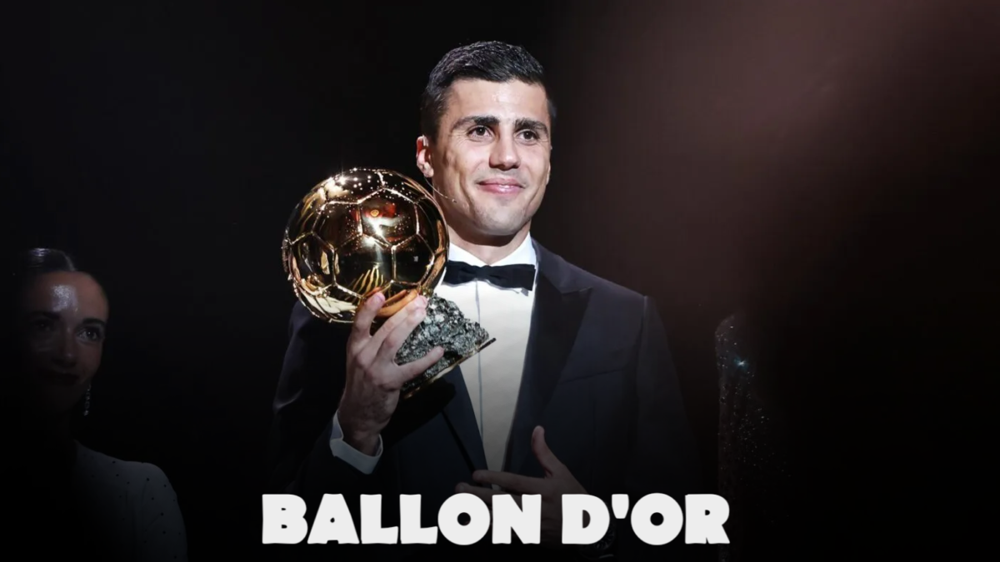
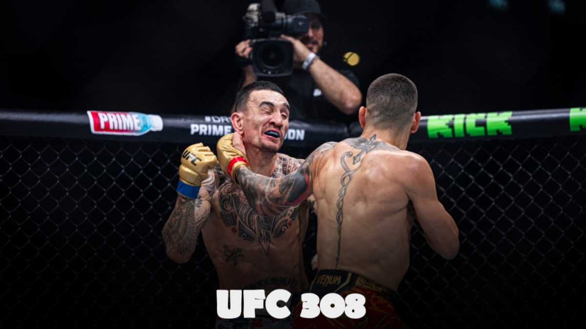
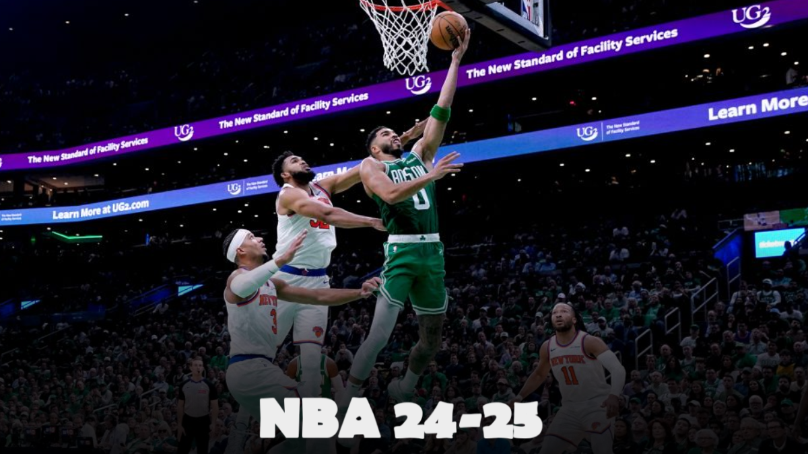

Football et polémiques : l’Eleven All Stars 2024, entre succès et incidents.
Le 12 octobre 2024, le stade Metropolitano de Madrid a accueilli la deuxième édition de l'Eleven All Stars. Toutefois, des incidents racistes ont terni l'événement, relançant le débat sur la place du racisme dans le sport...
Lire la suite...

Football et Polémique : le Ballon d'Or 2024, un triomphe contesté pour Rodri.
Le 28 octobre 2024, le prestigieux Ballon d'Or a été attribué à Rodri, le milieu de terrain espagnol de Manchester City, lors d'une cérémonie qui a suscité de vifs débats. Loin de faire l’unanimité, cette victoire a engendré des réactions contrastées, en particulier chez les supporters de Vinícius Júnior, considéré par beaucoup comme le favori pour ce prix...
Lire la suite...

Baseball : Les World Series 2024 – Un cinquième match décisif pour les Yankees et les Dodgers.
Le 30 octobre 2024, le Yankee Stadium de New York sera le théâtre du cinquième match tant attendu des World Series entre les New York Yankees et les Los Angeles Dodgers. Avec la série à égalité, ce match pourrait déterminer l'issue de cette finale exaltante, suscitant un engouement sans précédent dans les deux villes...
Lire la suite...

MMA : UFC 308 – Topuria et Holloway s'affrontent pour le titre des poids plumes.
Le 26 octobre 2024, la carte de l'UFC 308 a captivé les fans de MMA, réunissant l'aspirant Max Holloway et le champion Ilia Topuria pour le titre des poids plumes. Cet affrontement, attendu depuis des mois, a révélé toute l’intensité de la rivalité entre les deux combattants, chacun souhaitant dominer la catégorie...
Lire la suite...

NBA : Début de la saison 2024-2025, les Celtics défendent leur titre face aux Knicks.
La soirée du 22 octobre a marqué le début de la nouvelle saison de NBA, avec un match inaugural entre les Boston Celtics et les New York Knicks. Cette saison est particulièrement attendue, car les Celtics, après avoir remporté le championnat la saison précédente, sont sous les projecteurs pour défendre leur titre face à une ligue de plus en plus compétitive...
Lire la suite...
Marathon de Chicago 2024 : Une course record pour les favoris.
Le 13 octobre 2024, le Marathon de Chicago a vu défiler 45 000 coureurs, faisant de cette 46e édition l'une des plus marquantes de l'histoire de la course. Sur ce parcours réputé pour sa rapidité, des athlètes de haut niveau, comme l'Américaine Keira D’Amato et l’Éthiopienne Sutume Kebede, ont marqué les esprits par leurs performances exceptionnelles...
Lire la suite...